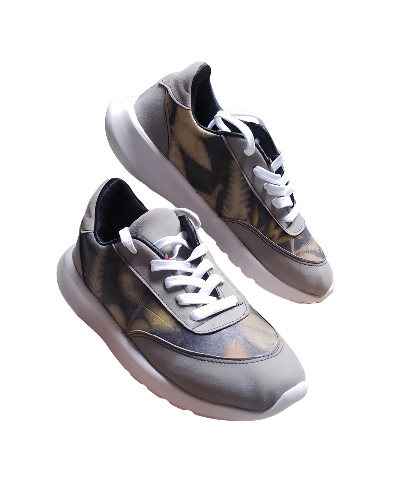

Signature Product


Detail Motif

Tampak Samping

Tampak Belakang
RG Footwear Collection
Liora series
Material
Kulit asli dengan motif ecoprint alami (daun/bunga)
Ukuran
36 - 42
Motif
Bervariasi natural, tidak ada dua pasang yang identik
Perawatan
Bersihkan dengan kain lembut, hindari merendam dan sinar
matahari langsung. Keringkan di tempat teduh agar motif
ecoprint tetap terjaga.
Harga
Rp. 375.000
1
Motif Natural. Dicetak langsung dari daun/bunga asli, bukan printing.
2
Limited Edition. Unik dari sisi motif maupun bentuk, tanpa duplikat persis.
3
Handmade. Dikerjakan manual dengan ketelitian tinggi di setiap tahap.